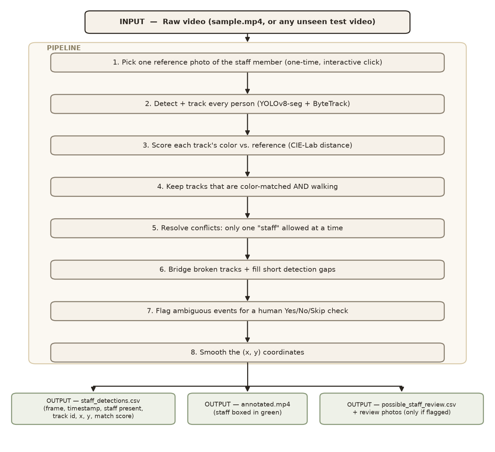

sample.mp4; all tuned constants are specific to this footage and re-checked (not blindly trusted) via a diagnostic table the tool prints each run.sample.mp4 — every model used is pretrained and unmodified.
sample.mp4 or a new, unseen test video.Models used, and why:
Models tried and rejected:
Ground truth: true staff-visible windows reported by a human watching sample.mp4 (12s-23s, 31s-50s), diffed against the pipeline's output.
| Metric set | Precision | Recall | F1 | Notes |
|---|---|---|---|---|
| Naive frame-presence (baseline) | 1.000 | 0.365 | 0.534 | Zero false positives; recall limited by tracking fragmentation |
| Identity-aware (baseline) | 0.920 | 0.336 | 0.492 | Discounts ~22 frames where a mid-contact ID-switch briefly misattributed the box |
| After bridging + position-jump fixes | 1.000 | 0.448 | 0.619 | Recall improved, precision still perfect |
.venv\Scripts\python.exe src\staff_id.pyannotated.mp4 shows the result at a glance (staff boxed in green); staff_detections.csv has per-frame (x, y) data.| # | Challenge | Solution |
|---|---|---|
| 1 | A quick single-frame test wrongly suggested YOLO couldn't detect people from this angle | Re-tested across 65 frames — 100% detected; first frame was just an outlier |
| 2 | Loose detection boxes included background pixels, diluting the color match | Restricted color sampling to actual person pixels via segmentation mask |
| 3 | CLIP scored the real staff member lowest of all tracks — backwards | Dropped as primary signal; kept classical Lab distance, which separates cleanly |
| 4 | Several people dress alike; some just sit still and coincidentally match on color | Only a genuinely walking track can count as staff |
| 5 | Staff changes from shirt to jacket mid-video, breaking the fixed reference; tag too small to read | Flag ambiguous cases for a one-click human Yes/No instead of guessing |
| 6 | Tracker kept losing/re-finding the same person, fragmenting one walk into short, uncounted pieces — the biggest cause of missed frames | Stitch nearby fragments and fill short gaps, on a "person doesn't teleport" rule |
| 7 | During brief contact between two people, the tracker quietly handed identity to the wrong person for ~1s | Flag sub-events with a physically implausible position jump for separate review |
| 8 | Two people could both score "staff" at once, which the brief says is impossible | Auto-keep the higher-scoring track; log and discard the other |
| 9 | A reviewer once answered wrong because a confirmation photo was too tight to judge by | Show two wider, highlighted photos per event, plus the reason it was flagged |
| 10 | A generic dark reference photo made the real staff score lower than random bystanders | Added on-screen guidance to pick the most distinctive frame/outfit |
Known limitations:
sample.mp4 and need re-checking (via the printed diagnostic table) on any new video.